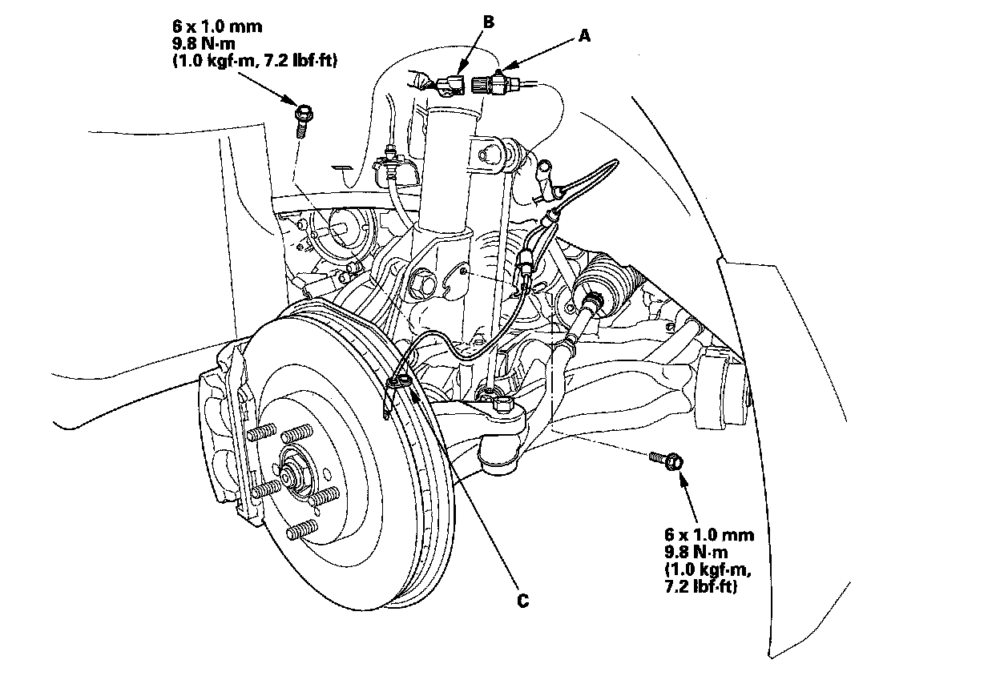
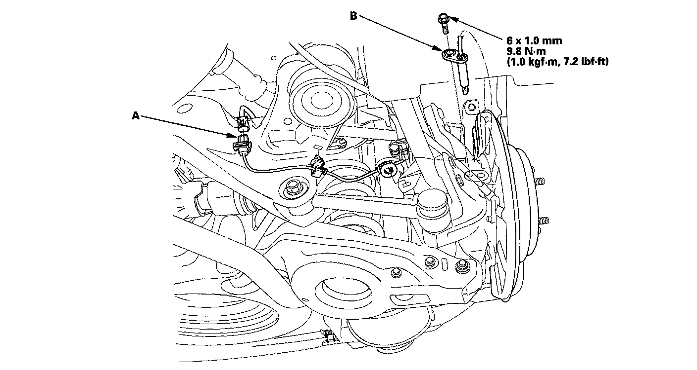

Wheel Speed Sensor: Service and Repair
Wheel Sensor ReplacementFront
1. Turn the ignition switch OFF.
2. Remove the clip (A), then disconnect the wheel sensor connector (B).

3. Remove the bolts and the wheel sensor (C).
4. Install the wheel sensor in the reverse order of removal, and note these items:
^ Install the sensor carefully to avoid twisting the wires.
^ If the wheel sensor comes in contact with the hub bearing unit, it is faulty.
5. Start the engine, and check that the ABS, the VSA indicators, and the trailer stability assist warning goes off.
6. Test-drive the vehicle, and check that the ABS, the VSA indicators, and the trailer stability assist warning do not come on.
Rear
1. Turn the ignition switch OFF.
2. Disconnect the wheel sensor connector (A).

3. Remove the clips, the bolt, and the wheel sensor (B).
4. Install the wheel sensor in the reverse order of removal, and note these items:
^ Install the sensor carefully to avoid twisting the wires.
^ If the wheel sensor comes in contact with the hub bearing unit, it is faulty.
5. Start the engine, and check that the ABS, the VSA indicators, and the trailer stability assist warning goes off.
6. Test-drive the vehicle, and check that the ABS, the VSA indicators, and the trailer stability assist warning do not come on.